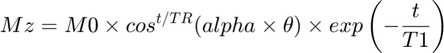

Calculating Initial Estimates for the T1 Relaxation Constant of the Decay of Hyperpolarisation, Initial Magnetisation and the Flip Angle Correction Factor
Contents
- Inputs
- Outputs
- Child Functions
- Finding the Estimated Flip Angles Used in the Experiment
- Parsing the Raw Data
- Verifying the Number of Flip Angle Entries Found Matches the Number of Measurements
- Creation of the data Array
- Verifying Enough Flip Angles were Used in the Experiment to Estimate T1
- Finding the Indices Where the Flip Angle was Changed
- Linearising the Raw Data
- Calculating the Gradients, Intercepts and Coefficients of Determination of the Linearised Raw Data
- Finding the Average TR for Each Section
- Estimating T1 and alpha from the Linear Model
- Notes
This function is the parent function of functions that calculate initial estimates of the T1 relaxation constant for the decay of hyperpolarisation, the flip angle correction factor and the initial magnetisation vector (which is proportional to total polarisation). The parameters are calculated by:
Splitting the data into sections determined by the flip angle used to measure the data (Ex. If the first two measurements used a 5° flip angle, the next two, 10° and the last two 5°, the data would be split into three sections, the first set of data collected using 5°, the 10° data and the second set of data collected using 5°) For each section, the data is treated as continuous and, each section is modelled with the following relation:

where Mz represents the magnetisation in the z-direction, M0 is the initial magnetisation in the z-direction, t is the time, TR is the average repetition time for the section (the average time interval before taking a measurement), alpha is the flip angle correction factor, is the estimated flip angle found from the flip1 parameter of the procpar file and T1 is the longitudinal relaxation constant, which describes the decay of hyperpolarisation
The above relation is not strictly true, since signal is actually proportional to Mxy and the data is discrete with the sense of the exact time when a measurement is taken, but the relation yields a good first estimate
The model is applied to the data by linearising it using:
By applying a linear model to the logarithm of the signal data, the gradient of the data is:
The intercept of the data is:
At this stage, the value of alpha is iterated and T1 is calculated for each set of data. The best alpha value is chosen to be the one where the coefficient of variation of the T1s is minimised.
Inputs
procpar: is the procpar file for the experiment, which is used to find the flip angles, repetition times (TRs) and times each measurement was taken
inp: is 'A' if the data was quantified using AMARES from JMRUI, or it should be 'M' if the data was quantified using integration in MestReNova and the data is a custom .csv integral file
coilnum: should only be entered if inp is 'M'. It is the number of coils used to collect the data.
field: should only be entered if inp is 'M'. It is a cell containing the names of the peaks that have been quantified
Outputs
eT1: is an array containing the estimated T1 values for each peak quantified
eM0: is an array containing the estimated M0 values for each peak quantified
eAlpha: is an array containing the estimated alpha values for each peak quantified
data: is an array, where the first column is the times each measurement was performed at, the second column is the estimated flip angle used to take each measurement and the remaining columns are the signal strength of each measurement where each subsequent column is measurements from different peaks
peaknames: is a cell, where each element is the name of a quantified peak
secinds & secvals: are arrays containing the indices where the flip angle used for a measurement is changed and the value the flip angle is changed to respectively
grads: is an array containing the gradients calculated for the linearised raw data fitted to the above model. The rows correspond to the different sections, while the columns correspond to the different quantified peaks
int: is an array containing the y-intercepts calculated for the linearised raw data fitted to the above model. The rows correspond to the different sections, while the columns correspond to the different quantified peaks
Rsquareds: is an arraying containing the coefficients of determination for the linearised raw data fitted to the above model. The rows correspond to the different sections, while the columns correspond to the different quantified peaks
Child Functions
flipAnglesFromProcpar: returns the contents of the flip1 parameter in the procpar file for the experiment
alphaparse: parses the raw data files into a readible extracting the times measurements were conducted at, the measurements themselves and the names of the peaks quantified
resizeColumn: resizes the array containing the contents of _flip1 if there is non-size agreement between it and the raw data. This function serves as a data verification step
_indsFirstSetValues: returns the indices where the flip angles used are charged and the values that they were changed to
linreg: applies the above model to the linearised raw data and calculates the gradient, intercept and coefficient of determination
_averageTRs: finds the average repetition time used in each section
findDecayParams: uses the output from linreg to find the best first estimate for T1, M0 and alpha
function [eT1,eM0,eAlpha,data,peaknames,secinds,secvals,grads,ints,Rsquareds] = estParamT1Decay(proc,inp,dat,coilnum,field)
procbool = 1;
if nargin < 1
procbool = 0;
end
Finding the Estimated Flip Angles Used in the Experiment
if procbool == 1 flips = flipAnglesFromProcpar(proc); else flips = flipAnglesFromProcpar; end
Parsing the Raw Data
if nargin >= 5 [x,y,peaknames] = alphaparse([],inp,'N',dat,coilnum,field,proc); elseif nargin >= 4 [x,y,peaknames] = alphaparse([],inp,'N',dat,coilnum,[],proc); elseif nargin >= 3 [x,y,peaknames] = alphaparse([],inp,'N',dat,[],[],proc); elseif nargin >= 2 [x,y,peaknames] = alphaparse([],inp,'N',[],[],[],proc); elseif nargin >= 1 [x,y,peaknames] = alphaparse([],[],'N',[],[],[],proc); else [x,y,peaknames] = alphaparse([],[],'N'); end
Verifying the Number of Flip Angle Entries Found Matches the Number of Measurements
If there is disagreement, the user is allowed to either terminate or continue with correction applied to the flip array as described below
nummeas = length(y(:,1));
nummeasflip = length(flips);
contbool = 0;
if nummeas ~= nummeasflip
disp('Error: The number of measurements is not equal to the flip angles arrayed in flip1 in the procpar')
prompt = 'To continue, if there are multiple entries in flip1, they will be spread along the number of measurements. Otherwise, if flip1 is empty, flip1 will be set to 1. Type Y to continue or N to stop (Y/N): ';
contbool = input(prompt,'s');
end
if contbool == 1
flips = resizeColumn(flips);
end
Creation of the data Array
numpeak = length(peaknames);
datacols = numpeak+2;
data = zeros(nummeas,datacols);
data(:,1) = x;
data(:,2) = flips;
data(:,3:end) = y;
if contbool == 2
return
end
Verifying Enough Flip Angles were Used in the Experiment to Estimate T1
FlipSets = unique(flips);
if length(FlipSets) < 2
disp('Error: Not enough flip angles arrayed to estimate T1')
return
end
Finding the Indices Where the Flip Angle was Changed
[secvals,secinds] = indsFirstSetValues(flips);
Linearising the Raw Data
ylog = log(y);
Calculating the Gradients, Intercepts and Coefficients of Determination of the Linearised Raw Data
[grads,ints,Rsquareds] = linreg(x,ylog,secinds);
Finding the Average TR for Each Section
avTRs = averageTRs(x,secinds);
Estimating T1 and alpha from the Linear Model
[eT1,eAlpha] = findDecayParams(grads,secvals,avTRs);
intf = exp(ints(1,:));
eM0 = intf./sind(eAlpha.*secvals(1));
end
eT1 =
37.8503 16.0191
eM0 =
1.0e+03 *
7.3741 5.1345
eAlpha =
1.2730 0.0120
data =
1.0e+03 *
0.0010 0.0050 0.7956 0.0050
0.0020 0.0050 0.7732 0.0055
0.0030 0.0050 0.7488 0.0045
0.0040 0.0050 0.7274 0.0038
0.0050 0.0050 0.7086 0.0038
0.0060 0.0050 0.6886 0.0033
0.0070 0.0050 0.6709 0.0033
0.0080 0.0050 0.6503 0.0031
0.0090 0.0050 0.6330 0.0034
0.0100 0.0050 0.6138 0.0030
0.0110 0.0100 1.1571 0.0122
0.0120 0.0100 1.0989 0.0113
0.0130 0.0100 1.0440 0.0110
0.0140 0.0100 0.9904 0.0101
0.0150 0.0100 0.9389 0.0092
0.0160 0.0100 0.8903 0.0042
0.0170 0.0100 0.8475 0.0044
0.0180 0.0100 0.8023 0.0036
0.0190 0.0100 0.7653 0.0040
0.0200 0.0100 0.7250 0.0033
0.0210 0.0150 1.0026 0.0041
0.0220 0.0150 0.9190 0.0039
0.0230 0.0150 0.8400 0.0039
0.0240 0.0150 0.7698 0.0035
0.0250 0.0150 0.7042 0.0031
0.0260 0.0150 0.6427 0.0028
0.0270 0.0150 0.5889 0.0028
0.0280 0.0150 0.5395 0.0024
0.0290 0.0150 0.4932 NaN
0.0300 0.0150 0.4511 NaN
0.0310 0.0050 0.1465 0.0018
0.0320 0.0050 0.1424 0.0014
0.0330 0.0050 0.1392 0.0006
0.0340 0.0050 0.1354 0.0015
0.0350 0.0050 0.1306 0.0011
0.0360 0.0050 0.1279 0.0015
0.0370 0.0050 0.1241 0.0013
0.0380 0.0050 0.1215 0.0017
0.0390 0.0050 0.1168 0.0005
0.0400 0.0050 0.1131 0.0005
0.0410 0.0100 0.2135 0.0020
0.0420 0.0100 0.2026 0.0021
0.0430 0.0100 0.1925 0.0019
0.0440 0.0100 0.1826 0.0010
0.0450 0.0100 0.1727 0.0007
0.0460 0.0100 0.1642 0.0015
0.0470 0.0100 0.1562 0.0009
0.0480 0.0100 0.1492 0.0018
0.0490 0.0100 0.1409 0.0014
0.0500 0.0100 0.1334 0.0011
0.0510 0.0150 0.1842 0.0014
0.0520 0.0150 0.1693 0.0007
0.0530 0.0150 0.1551 0.0015
0.0540 0.0150 0.1411 0.0012
0.0550 0.0150 0.1294 0.0011
0.0560 0.0150 0.1189 0.0006
0.0570 0.0150 0.1085 0.0010
0.0580 0.0150 0.1000 0.0007
0.0590 0.0150 0.0912 0.0008
0.0600 0.0150 0.0844 0.0011
peaknames =
2×1 cell array
{'PYRUVATE' }
{'PYRUVATE_HYDRATE'}
secinds =
1
11
21
31
41
51
secvals =
5
10
15
5
10
15
grads =
-0.0286 -0.0629
-0.0520 -0.1683
-0.0888 -0.0775
-0.0284 -0.0797
-0.0519 -0.0469
-0.0875 -0.0364
ints =
6.7063 1.6821
7.6255 4.4721
8.7762 3.0848
5.8693 2.8914
7.4923 2.4545
9.6762 2.0076
Rsquareds =
0.9996 0.8295
0.9999 0.8613
1.0000 0.9511
0.9970 0.1274
0.9997 0.0375
0.9998 0.0281
Notes
The inputs used in the example were:
proc: 'procpar28_11_19_Dissolution'
inp: 'A'
dat: {'Decay_Dissolution_28_11_19_even.txt', 'Decay_Dissolution_28_11_19_odd.txt'}
The example was run by putting:
[eT1,eM0,eAlpha,data,peaknames,secinds,secvals,grads,ints,Rsquareds] = estParamT1Decay('procpar28_11_19_Dissolution','A', {'Decay_Dissolution_28_11_19_even.txt', 'Decay_Dissolution_28_11_19_odd.txt'})
into the command window